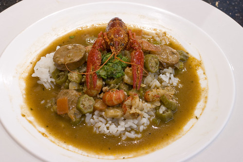

Crawfish Gumbo

Description
Plump crawfish tails, succulent andouille sausage,
and vibrant southern vegetables mixed into a rich
and spicy roux-based sauce. Served with fluffy white rice. Serves 8.
Ingredients
- Crawfish 2lbs
- Andouille Sausage, Sliced 1lb
- Celery, Chopped 1 cup
- Onion, Chopped 1 cup
- Green Bell Pepper, Chopped 1 cup
- Okra, Sliced 1 lb
- Garlic, minced 8 cloves
- Butter, 1 stick
- Flour, 1 cup
- Chicken Stock, 1 cup
- Crushed Tomatoes 24oz
- Creole Seasoning, 4 tablespoons
- Cooked White Rice, 2 cups
Steps
- Start by creating a roux by heating a small pan over a low flame and melting the butter.
Mix flour into butter as it melts. Keep mixture on low until it is golden brown or to your likeing.
- Boil Crawfish for 10 minutes. Remove Crawfish meat from shells and set aside.
- Sautee sausages in olive oil in your stock pot for 5 min on med-high heat. Set aside when lightly browned.
- Add celery, onion, and green pepper to stock pot. Sautee in olive oil until soft and translucent, about 10 min.
- Add garlic to stock pot, sautee until fragrent, about 2 min.
- Add chicken stock, crushed tomatoes, creole seasoning and roux. Stir together until a consistant smooth sauce is formed.
- Stir in okra, until sauce is thickened.
- Throw the crawfish and sausage meat into the stock pot and stir until everything is well mixed.
- Serve in a bowl with a scoop of white rice in the middle of the gumbo.